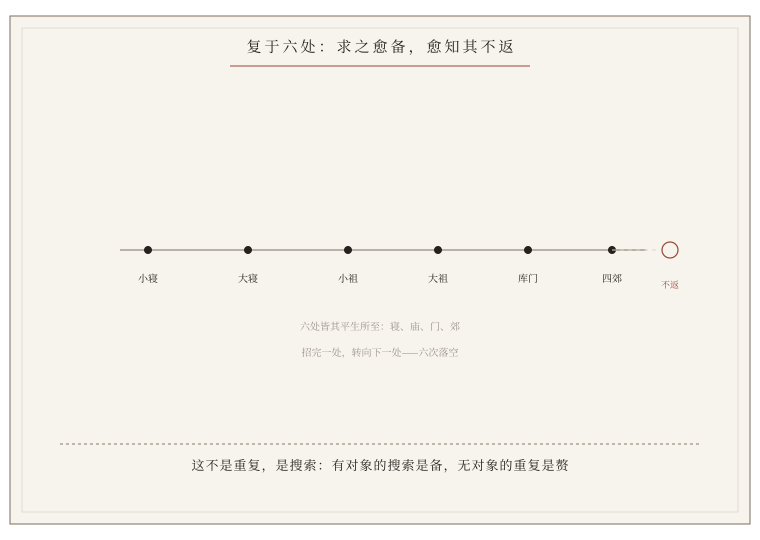

檀弓上 · 三·一百零五 · 第 308 课
君复于小寝、大寝、小祖、大祖、库门、四郊。
说什么事：国君之复（招魂），要在六处地方各招一遍：小寝、大寝、小祖、大祖、库门、四郊。
落在哪一层：复处之备。论「求之愈备，愈知其不返」。
为何编在此位：上二课论报丧之代命、论六事并作；此课接「复」这一事，把它展开成一个空间。
【经】君復於小寢、大寢、小祖、大祖、庫門、四郊。
【注】尊者求之備也，亦他日所嘗有事。
【疏】此一节论人君礼备，复处又多。自小寝以下，明招魂处所也。「君」，王侯也。「于小寝」者，前曰庙，后曰寝。《尔雅》云：「室有东西厢曰庙，无东西厢有室曰寝。」此「小寝」者，所谓高祖以下寝也，王侯同。「大寝」谓天子始祖、诸侯大祖也。「小祖」，高祖以下庙也，王侯同。「大祖」，天子始祖、诸侯大祖庙也。两言于庙，求神备也。《周礼·夏采》「以冕服复于大祖庙」是也；其小庙则祭仆复之，其小寝大寝则隶仆复之。故《祭仆》云「复于小庙」，郑注云「小庙，高祖以下也」；《隶仆》云「复于小寝大寝」，注云「小寝，高祖以下庙之寝也，始祖曰大寝」。四郊则夏采复之，故《夏采》云「乘车建绥，复于四郊」，此天子之事也。其诸侯复则小臣，故《丧大记》云「小臣复」。案《周礼·内小臣职》「小臣上士四人」；案《杂记》云「复西上」，注「各如其命数」。上公九命，侯伯七命，则小臣不足，明更有余官。又复人虽依命数，复处既多，则复人不足，当于此复了，更转乡他处。
小寝 高祖以下的寝。注疏以「前庙后寝」分，寝为燕居之所。
大寝 天子之始祖、诸侯之大祖的寝。
小祖 高祖以下的庙。
大祖 天子始祖之庙、诸侯大祖之庙。
库门 公宫之外门。藏兵器之所近，故曰库。
四郊 城之四郊。疏引《夏采》「乘车建绥，复于四郊」。
求之备 求之周全。备，尽。
他日所尝有事 注语：这些地方，是他平日起居、有事之处。
转乡 疏语：转向别处。
国君招魂，在小寝、大寝、小祖、大祖、库门、四郊，各招一遍。
此节把「复」从一件事，展开成六个地方。
注只一句，八个字：「尊者求之备也。」又说「亦他日所尝有事」——这六处，都是他活着时候到过的地方。
疏把每一处都落实到人：小寝大寝由隶仆复，小庙由祭仆复，大祖庙与四郊由夏采复。天子如此，诸侯则小臣复。而小臣只有上士四人，复处既多，人不足，便「于此复了，更转乡他处」——招完一处，转向下一处。
这里有一层极冷的东西：招魂的六个地点，是他一生走过的地方。寝、庙、门、郊。人死了，魂不知往哪去了，于是把他所有「可能在」的地方都走一遍，最后一次，以他的名义，在每一个门口喊他的名字。
而魂若真的会回来，一处也就够了。六处之备，正是六次落空。
第一层 这不是「再告」 295 节曾子讥「读赗」为「再告」——同一件事说两遍。此节复于六处，也该是同一件事做六遍，何以不讥？
区别在对象：再告是同一个听者听了两遍，复是六个不同的地方各喊一次。前者是重复，后者是搜索。礼对「重复」与「搜索」判然有别：无对象的重复是赘，有对象的搜索是备。
第二层 「他日所尝有事」的分量 注这五个字，把招魂的空间从抽象变成了具体：不是随便六个地方，是他生前来过的地方。礼在这里用了一张他自己的地图。
这一层可与 304「各视生时」并读：器要视其生时之屋，魂要寻其生时之地。礼对「生时」的倚重，是它一贯的方法——不从抽象的人出发，从这一个具体的人出发。
第三层 「人不足」的实情 疏说复人依命数（上公九命、侯伯七命），而小臣只四人，复处既多，人不敷用，只好一批批转。这是一条极朴素的记载：礼的理想与执行之间，总有缺口。疏不掩饰这个缺口，反而把它记下来——招魂是跑的，跑不过来就一处处来。
礼书的可贵，常在这种地方：它记仪节，也记仪节办不动时的办法。
第四层 尊者求备，与「不厄人」相对 298 节孔子许客「于我乎馆、于我乎殡」，是不使人无措；此节君之复六处，是把所有可能都想到。两者都在「备」，一为待人，一为待己（己之亲）。备而不滥，是其分寸：六处皆有确指，不是遍地撒网。
与今日何干 今人寻人，靠电话与定位。此节的六处，是两千多年前的「定位」：把他可能去的地方排一遍，逐一呼喊。技术变了，那件事没变——人不肯承认「找不到」。
| 左 | 右 |
|---|---|
| 小寝 | 高祖以下之寝 |
| 大寝 | 始祖之寝 |
| 小祖 | 高祖以下之庙 |
| 大祖 | 始祖之庙 |
| 库门 | 宫之外门 |
| 四郊 | 城之四郊 |
| 求之备 | 六处皆到 |
| 尝有事 | 皆其平生所至 |
画一处宫城之内，视点自高处略俯。画面由近而远依次可见：两重屋宇（一为燕居之寝、一为庙）、一道宫门（门内可见库房之檐）、以及城外一片开阔的郊野（只画地平与几株树）。每一处屋脊、门楣之上，各立一人（背向观者、双手高举一件衣服）。人物只作剪影，衣形显露最清楚。不写文字、不画人面细节。赭色只用在六处屋脊与门楣上那六件高举的衣服。
